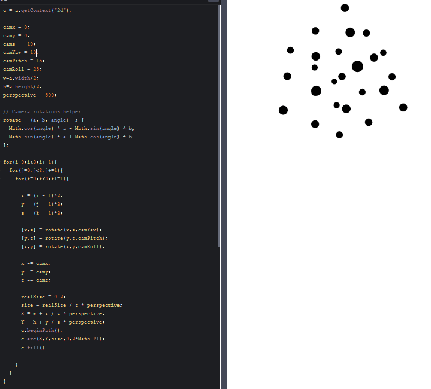
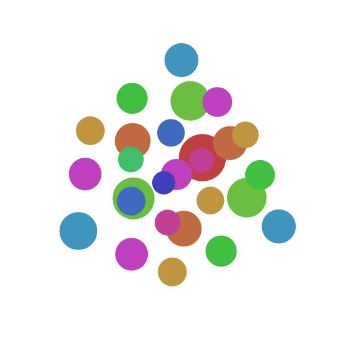
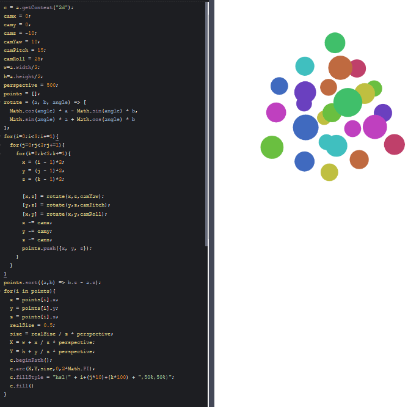
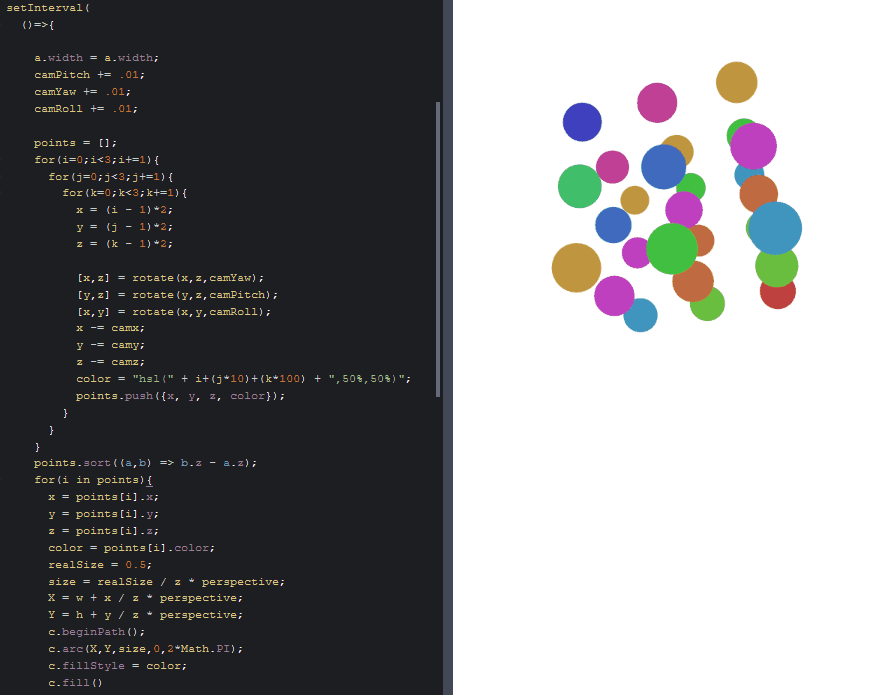
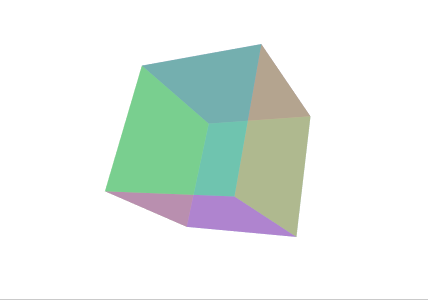

3D projection on a 2D canvas
january-may 2019
A very short article about a very specific topic: draw 3D points on a 2D canvas!
It's not very complex, but it puzzled me for years, until C4ntelope made this handy introduction based on his own intuition and computations, and Román Cortés helped me complete these explanations and simplify the maths and the code.
(This article is based on that Twitter thread).
Ingredients
- Camera position: cx, cy, cz.
- Camera rotation: yaw, pitch, roll.
- Simulated distance between the eye and the screen: perspective
- Canvas half-width and half-height: w = canvas.width/2, h = canvas.height/2.
- Points in 3D space, with coordinates [x, y, z].
- The points' size (or radius) in the "real world": realSize.
How to draw each point
Of course, you can't just draw every point at the coordinates [X,Y] of your 2D canvas. You need a way to represent its depth, with perspective, in other terms: do a projection.
- Take the point's coordinates: x,y,z.
- Perform camera rotations using Euler's equations:
rotate = (a, b, angle) => [
Math.cos(angle) * a - Math.sin(angle) * b,
Math.sin(angle) * a + Math.cos(angle) * b
];
[x,z] = rotate(x,z,yaw);
[y,z] = rotate(y,z,pitch);
[x,y] = rotate(x,y,roll);- add the camera offset to the coordinates:
x -= cx;
y -= cy;
z -= cz;- Scale the point according to its depth:
size = realSize / z * perspective;- If Z > 0, place the point on the canvas:
if(Z > 0){
X = w + x / z * perspective;
Y = h + y / z * perspective;
c.arc(x, y, size, 0, 2 * Math.PI);
c.fill()
}>>> CODEPEN DEMO <<<

Z-ordering
Let's go a bit further and notice that the points are drawn in the order in which they are declared, which can be problematic in case of overlap. Here's the previous demo with bigger points and colors:

The solution is to order all the points by decreasing depth before projecting and drawing them:
// Loop on all the points (like before)
{
// (...)
// Camera rotation (like before)
// Camera offset (like before)
// Set point color
// (...)
// Store the point in an array
points.push({x, y, z, color});
}
// Order the points by depth
points.sort((a,b) => b.z - a.z);
// Draw the points (like before)
for(i in points){
x = points[i].x;
y = points[i].y;
z = points[i].z;
color = points[i].color;
size = realSize / z * perspective;
if(Z > 0){
// (...)
}
}>>> CODEPEN DEMO <<<

Animation
You can embed this code in an animation and make the camera and/or the points move at each frame.
setInterval(
() => {
// Reset canvas
a.width = a.width;
// Increase every camera angle (for example)
pitch += .01;
yaw += .01;
roll += .01;
// (everything like before)
}
, 16
);
>>> CODEPEN DEMO <<<

Polygons
It's easy to link 3D points and make polygons, outlined and/or filled with a color.
But it's not super easy to z-order these polygons correctly.
I found an approach that seems to work, at least for "simple" scenes (for example, a cube made of 6 faces):
- Make an array containing all your faces, along with their center, vertices and color (rgba colors are possible!).
- Apply the camera rotation and offset to each face's center and vertices.
- Order the faces by decreasing center depth.
- Draw the faces from the furthest to the nearest by linking its vertices and filling the shape with the right color.
Basically:
cube = [
{center:[-1,0,0],vertices:[[-1,-1,-1],[-1,-1,1],[-1,1,1],[-1,1,-1]],color:"hsla(50, 50%,50%,.5)"},
{center:[1,0,0], vertices:[[1,-1,-1],[1,-1,1],[1,1,1],[1,1,-1]], color:"hsla(100,50%,50%,.5)"},
{center:[0,-1,0],vertices:[[-1,-1,-1],[-1,-1,1],[1,-1,1],[1,-1,-1]],color:"hsla(150,50%,50%,.5)"},
{center:[0,1,0], vertices:[[-1,1,-1],[-1,1,1],[1,1,1],[1,1,-1]], color:"hsla(200,50%,50%,.5)"},
{center:[0,0,-1],vertices:[[-1,-1,-1],[-1,1,-1],[1,1,-1],[1,-1,-1]],color:"hsla(250,50%,50%,.5)"},
{center:[0,0,1], vertices:[[-1,-1,1],[-1,1,1],[1,1,1],[1,-1,1]], color:"hsla(300,50%,50%,.5)"},
];
centers = [];
for(i in cube){
[x, y, z] = cube[i].center;
// (project)
centers.push({x, y, z});
}
centers.sort((a,b) => b.z - a.z);
// (draw)>>> CODEPEN DEMO <<<

Cheers!